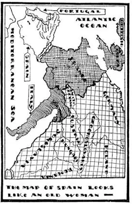
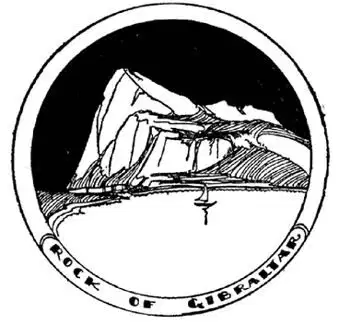
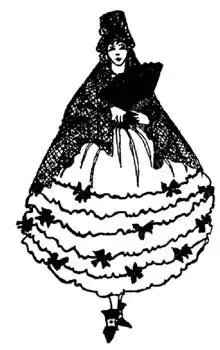

31
Castles in Spain
西班牙城堡

WHEN-I-WAS -A-BOY I used to plan the kind of home I would have when I grew up and had plenty of money. It was to have a gymnasium in the attic, a zoo for pets in the cellar, a museum of curiosities in the parlor, and a soda-water fountain in the dining-room. My mother used to say that was my Castle in Spain, and when I asked her what a Castle in Spain was, she said, “Any wonderful home—in your mind.”
But Spain is a real place, a real country, and there are real castles there even now.
The map of Europe is like a puzzle-picture. If you turn it around or look at it sideways you will see a little old woman with a big head, a hump-back, and a long leg kicking a football into the sea. The head is called Spain, and the cap that Spain is wearing on the front of her head is called Portugal. Where the head joins France there is a collar of mountains called the Pyrenees.

西班牙地图看起来像个老太太
At one time Spain not only looked like the head of Europe, she really was the head of Europe, for she owned a great part of Europe. Then there came a time just after Columbus discovered America when Spain was the head not only of Europe but of all the World. She then owned a great part of North America and all of South America, except Brazil. So she was the greatest country i. t. w. W.. Now, however, Spain doesn’t even own all of Spain. On the map Spain seems to be rubbing her nose against the nose of Africa, as some savages rub noses when they meet. This nose of Spain is called Gibraltar, but Gibraltar does not belong to Spain; it belongs to England.
Gibraltar looks like a nose on the map, but if you were in a boat out on the Mediterranean Sea, Gibraltar would look like a long, high rock. Between it and Africa there is a narrow strip of water called the Strait of Gibraltar. It is only about thirteen miles across. It is about half as wide as the Strait of Dover, but powerful currents are pulling and pushing in and out from the Atlantic Ocean, and only recently has any one been able to swim across it. Inside of the Rock of Gibraltar, England has cut hallways and rooms and windows with long-distance guns in them, and placed her soldiers there to watch out over the water, and in time of war to fire on any one England does not want to pass through the water-gate.
Long years ago most all of the World that people knew was chiefly around the edge of the Mediterranean Sea. Sailors at that time thought it dangerous to go outside this gate, the Strait of Gibraltar, into the great ocean, and—so the story goes—they set up Pillars on each side of the Strait like gate-posts. They called them the Pillars of Hercules, and they put up a sign to warn sailors that it was dangerous to go beyond these Pillars. The sign said “Non Plus Ultra,” which meant “Nothing More Beyond.” It was supposed that not far outside the Pillars of Her-cules the ocean came to an edge where you would tumble off down, down, down to bottomless nothing. Columbus did not believe any such foolishness; he was not afraid. He sailed from Spain, starting from a place outside the Pillars of Hercules called Palos. He sailed on and on and on until, as you know, he came to America.

Hidden in this rock is a huge fort with soldiers and big guns
岩石里面隐藏着一个堡垒，里面有拿着长枪的士兵
Just before Columbus sailed from Spain there were people living there called Moors, who had come across from Africa and made their home in Spain. The Moors were different from other people in Europe. They did not believe in Christ; they were not Christians. They believed in a man named Mohammed and a god whom they called Allah. The Moors built beautiful palaces, but they were different from Christian palaces. The Moorish princes lived in one of these palaces on a hill in the city of Granada, which is not far from Gibraltar. The palace in Granada was called the Alhambra.

She wears a tall comb in her hair and a veil over her head and shoulders
她在头发上别一把高高的梳子，面纱覆盖了头和肩
The Christians in Spain didn’t like the Moors, so they fought them, and at last the Christians drove the Moors out of Spain, drove them across the Strait of Gibraltar back into Africa whence they had come. The Spanish Queen received Columbus in the Alhambra and bade him good-by before he started out for the New World, but no one now lives there. It is still there on the hill at Granada and Spain keeps it as it once was, so that people may visit it. The walls, instead of being plastered or painted, are covered with colored tiles. The doorways, instead of being square, are shaped like a horseshoe, and its court-yards have splashing fountains and walled-in pools where the Moorish princesses used to bathe instead of in bathtubs.
A city in Spain called Seville has a great Cathedral, the second largest church in the World. It was built, of course, after the Moors had been driven out of Spain, as it is a Christian church, built where there once was a Moorish church. In this Cathedral are buried what are supposed to be the ashes of Columbus, though we think, as I told you before, that they are not his ashes at all, but the ashes of his son, and that his real ashes are in Haiti.
Moorish women used to wear veils over their faces. It was thought immodest for them to go out on the street with their faces uncovered. The Spanish women often wear veils too, but they wear them over their heads instead of hats, and some of the veils made of lace are very beautiful and very costly. They also wear very big and high combs in their hair and bright-colored silk shawls over their shoulders, and in summer carry beautiful fans, for it gets very warm in Seville—so warm that during the middle of the day no one goes out-of-doors who doesn’t have to. In our country young children take naps during the day, but in Spain grown-ups take naps too, after their midday meal, only they call a nap by the very pretty name “siesta.”
【中文阅读】
我小时候常常会想如果长大后我很有钱，我要住什么样子的房子呢？我的房屋阁楼上要有健身房，地下室要有宠物住的动物园，客厅里要有装满各种珍奇的博物馆，餐厅里要有一个苏打水喷泉。我妈妈常说那是我的“西班牙城堡” [1] ，当我问她西班牙城堡是什么时，她说：“你幻想中的任何奇妙的房屋。”
但西班牙是个真实的地方，真实的国家，那里甚至现在还有真正的城堡。
欧洲地图就像一幅智力拼图。如果你把它转过来或者从侧面看过去，你会看到一个小老太太，头大大的，背驼驼的，一条长长的腿正把一个足球踢倒海里去。她的头叫做西班牙，西班牙头上戴的帽子叫做葡萄牙。头和法国相接的地方是一条山脉形成的衣领，叫做比利牛斯山脉。
西班牙不仅在地图上看起来像欧洲的头，而且曾经有一个时期真的是欧洲的首领，因为她拥有一大片欧洲的土地。就在哥伦布发现美洲之后一段时间，西班牙不仅是欧洲的首领，还是全世界的首领。西班牙当时拥有北美洲大部分土地和除巴西之外的所有南美洲土地。因此它是世界上最大的国家。然而现在西班牙甚至不拥有西班牙的全部领土。在地图上，西班牙看起来正在和非洲蹭鼻子，就像有些人在见面时会互相蹭蹭鼻子那样。西班牙的这个鼻子叫做直布罗陀，但直布罗陀不属于西班牙；它属于英国。
直布罗陀在地图上看起来像个鼻子，但是当你坐船在地中海行驶的时候，直布罗陀看起来就像一块又长又高的岩石。在它和非洲之间有一条狭窄的水域，叫做直布罗陀海峡。它大约只有13英里宽，宽度大约是多佛海峡的一半，但来自大西洋的强劲海流涌进涌出，波涛汹涌，直到最近才有人能游泳横渡海峡。在直布罗陀山里，英国人开凿了过道、房间和窗户，窗口放置了远程步枪，还安插士兵在那里监视海面，在战争时期任何人未经英国人同意而经过水闸，英国士兵就要开枪射击。
很多年以前，地中海地区的人认为地中海差不多就是整个世界。那时候的水手认为走出直布罗陀海峡这道大门进入大洋会很危险，而且——传闻如此——他们在海峡两岸竖起了柱子，就像门柱一样。他们把那叫做“赫拉克勒斯之墩”，他们还挂上告示牌警告水手如果越出石柱就很危险。告示牌上写到“Non Plus Ultra”，意思就是“禁止再往外行”。人们认为在赫拉克勒斯之墩之外不远就到了大海的边缘，人到这里会坠落下去，落啊落啊落入无底深渊。哥伦布根本不相信这种愚蠢的想法；他无所畏惧。他从西班牙出发，从赫拉克勒斯之墩外一个叫做帕洛斯的地方起航。他在海上一直航行，没有退缩，最后，如你所知，他到达了美洲。
就在哥伦布从西班牙出发前，摩尔人居住在西班牙，他们从对岸的非洲来到西班牙安家落户。摩尔人和欧洲的其他人不同。他们不信仰基督，不是基督徒。他们信奉一个叫做穆罕默德的人和一个叫做安拉的神。摩尔人建造了美丽的宫殿，但是和基督徒的宫殿不一样。摩尔王子就住在格拉纳达城山上其中一 个宫殿里，离直布罗陀不远。格拉纳达的宫殿叫做爱尔汗布拉宫。
西班牙的基督徒不喜欢摩尔人，于是和他们交战，最终基督徒把摩尔人赶出了西班牙，赶过了直布罗陀海峡，赶回到他们的老家，非洲。西班牙王后在爱尔汗布拉宫接见了哥伦布，并在他起航去寻找新大陆之前为他送行，但现在没有人住在爱尔汗布拉宫。它仍然在格拉纳达的山上，西班牙人现在还维持着宫殿的原貌，让游客去参观。那里的墙壁不是粉刷或油漆的，而是贴着彩色的砖块。门不是方形的，而是马蹄形的，庭院里有水花飞溅的喷泉和有围墙的水池，过去摩尔公主就是在这里沐浴而不是在浴缸里。
西班牙有一个叫做塞维利亚的城市，那里有一个大教堂，是世界第二大教堂，当然是在摩尔人被赶出西班牙之后才建造的，因为这是一个基督教教堂，就建在原来是一个摩尔人教堂的地方。这个教堂里埋葬着据说是哥伦布的骨灰，不过，我们认为那根本不是哥伦布的骨灰，而是他儿子的骨灰。哥伦布的骨灰其实在海地，这些我在前面都介绍过。
过去摩尔妇女脸上常戴着面纱。如果她们不把脸遮住就外出上街，会被看做是有伤风化。西班牙女子现在也经常戴面纱，但是她们不是遮脸而是戴在头上当帽子用，有些装饰面纱非常漂亮，也很昂贵。她们还在头发上别一把又大又高的梳子，肩上批着色彩鲜艳的丝绸披巾，夏天会拿着漂亮的扇子，因为塞维利亚到夏天就很热了——非常热，所以中午人们尽量不到室外去。在我国小孩子白天要小睡一会，但在西班牙成年人吃过午饭后也打个盹，只是他们给打盹起了个好听的名字叫“午后小睡”。